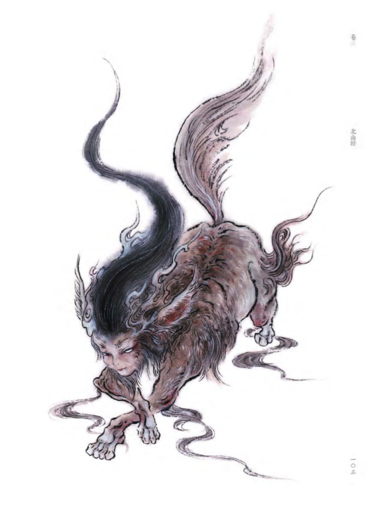
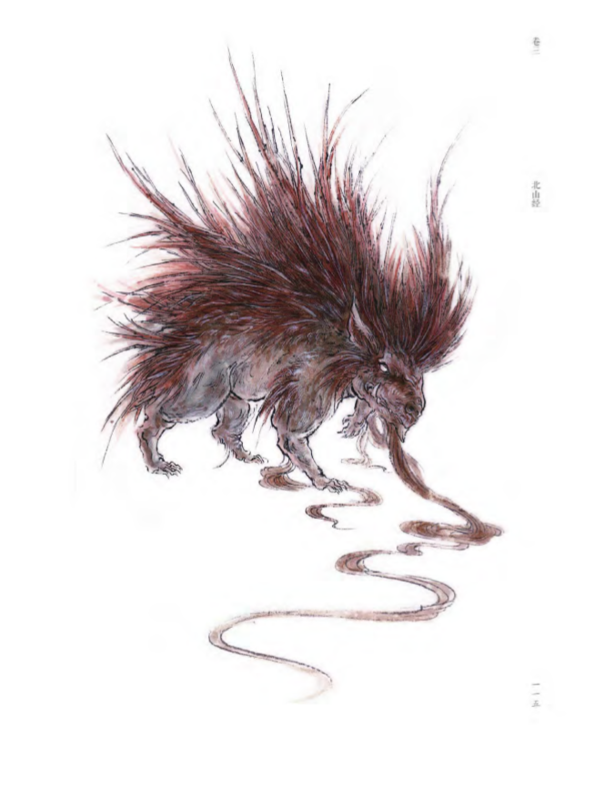
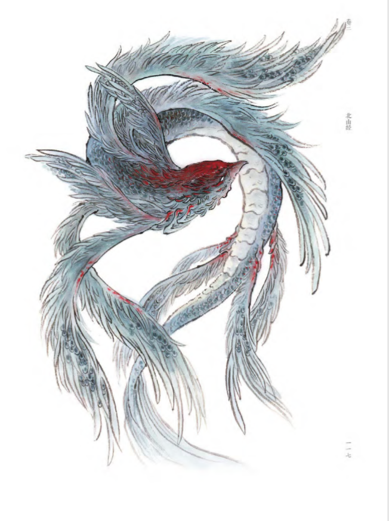
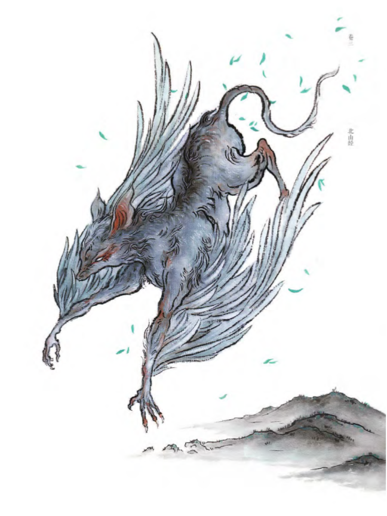
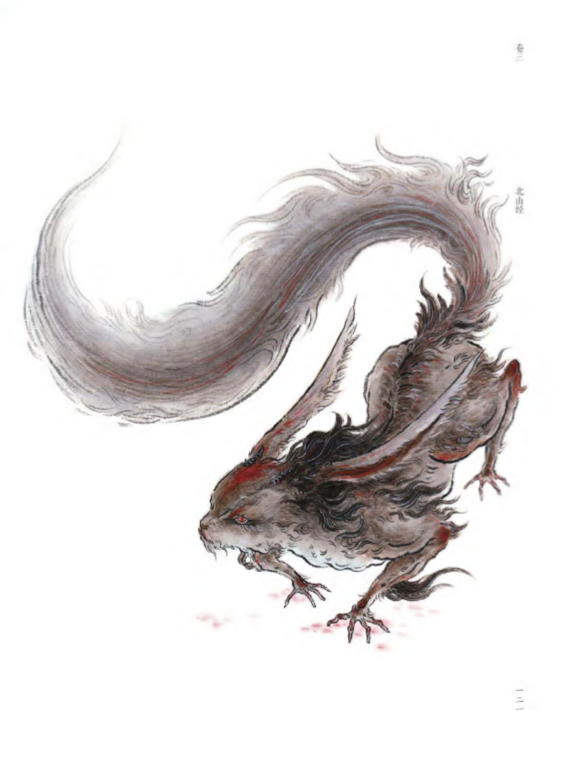
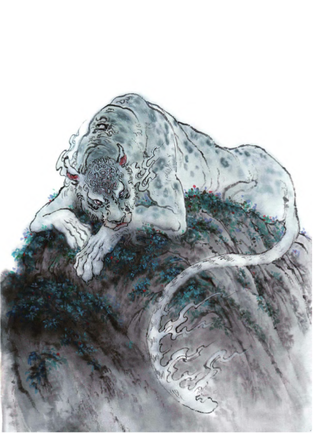
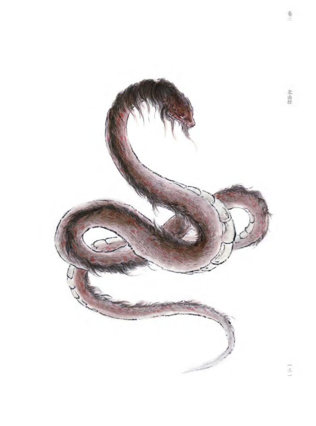
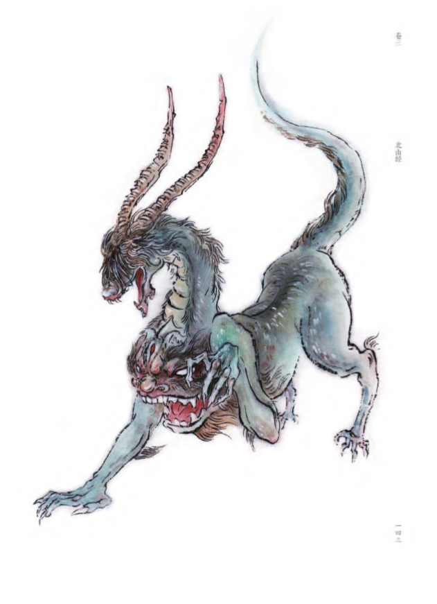
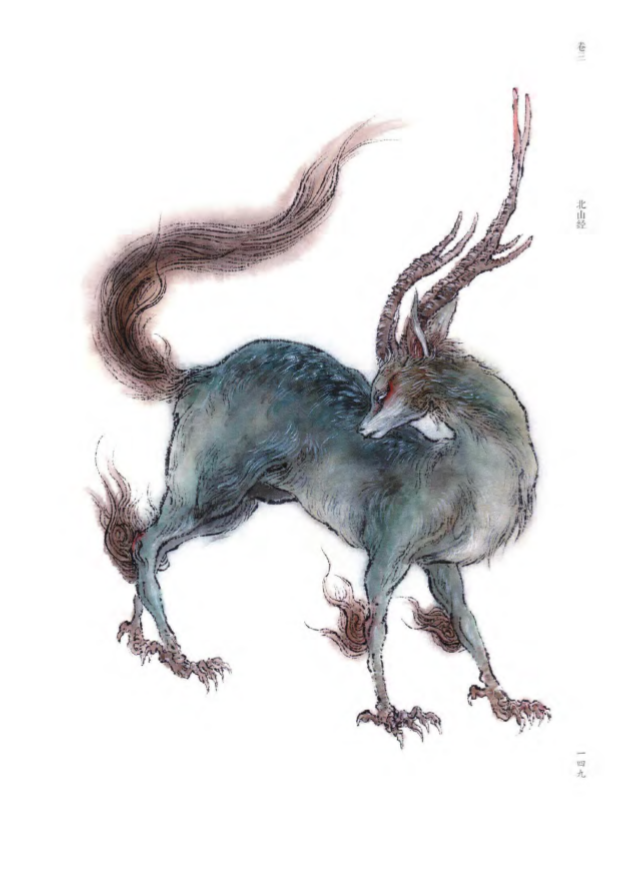
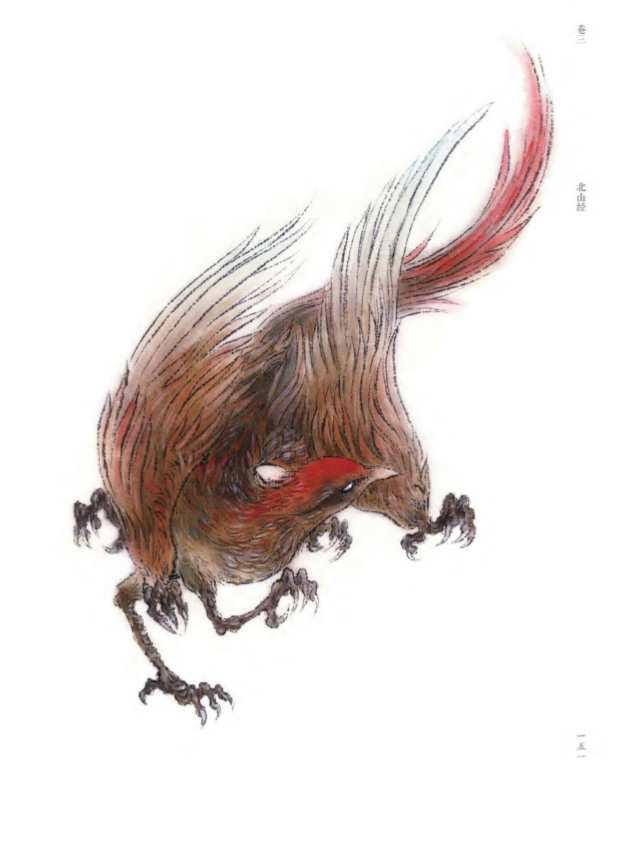

山辉
有兽焉，其状如犬而人面，善投，见人则笑，其名曰山辉，其行如风，见则天下大风
孟槐
有兽焉，其状如貆而赤豪，其音如榴榴，名曰孟槐，可以御凶
鳛鳛鱼
又北三百五十里，曰涿光之山，嚣水 出焉，而西流注于河。其中多鳛鳛之鱼，其状如鹊而十翼，鱗皆在羽端，其音如鹊，可以御火，食之不瘅
寓
又北三百八十里，曰虢山，其上多漆，其下多桐椐。其阳多玉，其阴多铁。伊水出焉，西流注于河。其兽多橐驼，其鸟多寓，状如鼠而鸟翼，其音如羊，可以御兵
耳鼠
有兽焉，其状如鼠，而菟首麋身，其音如獋犬。以其尾飞，名曰耳鼠,食之不睬，又可以禁百毒
孟极
有兽焉，其状如豹，而文题白身，名曰孟极，是善伏，其鸣自呼。
长蛇
北二百八十里，曰大咸之山，无草木，其下多玉。是山也，四方，不可以上。有蛇名曰长蛇，其毛如彘豪，其音如鼓柝
狍鸮
有兽焉，其状羊身人面，其目在腋下，虎齿人爪，其音如婴儿，名曰狍鸮气是食人
骅
有兽焉，其状如麕羊而四角，马尾而有距，其名曰骅，善还其名自识。
鹩
有鸟焉，其状如鹊，白身、赤尾、六足，其名曰鹩，是善惊，其鸣自饺
